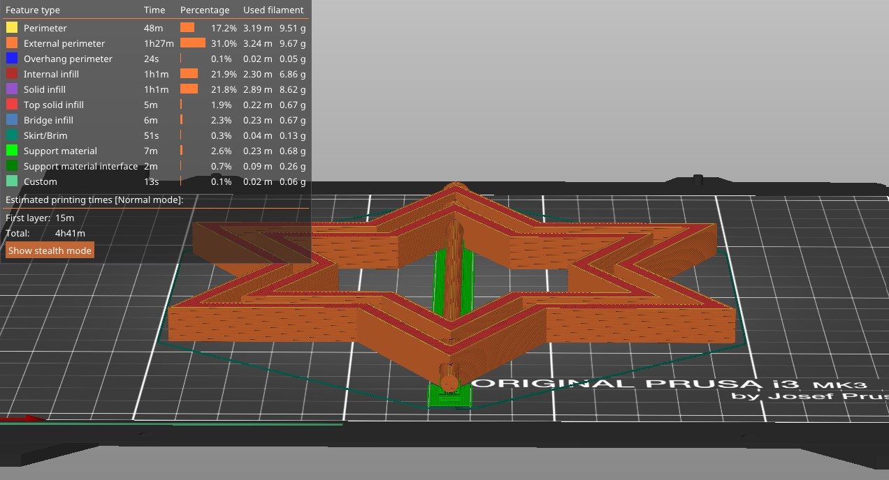

Introduction
This week the goal was to 3D design and print something that could not easily be done with traditional subtractive methods. It would first be important to define what a "subtractive" method is, specifically in relation to a "additive" method. Subtractive methods work by starting with a hunk of something, and removing material until you end up with your desired final product. Additive methods work in the other way, where you start with nothing, and build up until you end up with your part. Subtractive methods are really easy to work with, but dont allow for the same complexity of build as additive methods. For example, a hollow cube would be impossible to create using subtractive methods, but is very easy to do with additive methods. Classic subtractive methods would be laser cutting or milling, and the main additive method is 3D printing.
Design
I decided this week to create a concentric set of spinning stars. This wouldnt really work well using subtractive methods as there
would be no simple way to remove the material between the central dowel and each of the stars. So the first step was to design it in
fusion 360. This design was in two steps of sketches, one for the stars and one for the dowel. There are the sketches:
Then I extruded everything to make it 3d, where the two sketches are on perpendicular planes. I designed it so that the rod sketch has
3 parts, 1 of the actual rod, 1 of an exterior larger piece that cuts out the stars to give space between the stars and the rod, and finally
a small little notch to connect the two for printing, that could be easily snapped off.
Download my 3D Model file
Printing
Now onto the final step of porting my model into PrusaSlicer and getting it printed. I exported my mesh
(download here), and worked to figure out how I wanted the supports to be done. I wanted to make
sure that the filament for the rod layer didn't extrude onto the star layer, but also didnt want to put so much support that the spin wouldnt work.
I eventually decided not to have any supports inside the star-rod area and to just bank on the little snappable connector I designed, and to only
include supports for the area where the rod is floating over nothing.

Download my sliced gcode
The print the first time did not set correctly on the first layer, likely due to the printer bed not being hot enough. But, after
scraping off the failed print and restarting it, everything seemed to go flawlessly. It was a little difficult to be able to snap
of the connectors I printed, but the supports came off like a breeze. Then finally after some time forcing some rotation, we ended up
with this:

For my first attempts at 3D printing, I am really happy with how it turned out. I do think I still have some work to do with making
my own supports that are easy to be snapped off for production, as well as cleaning up my general design.
3D Scanning
tbd